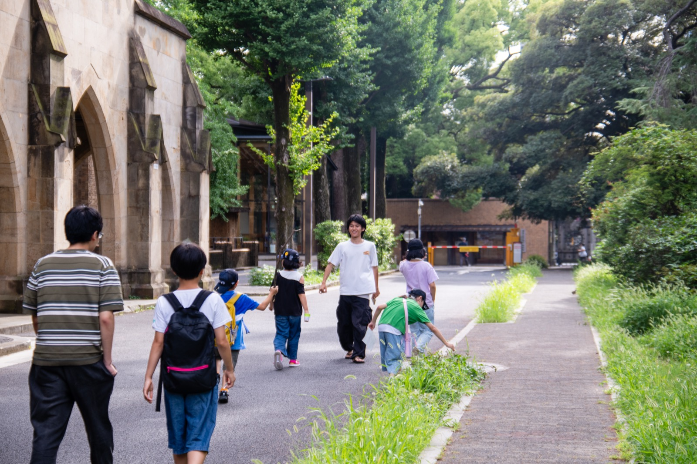
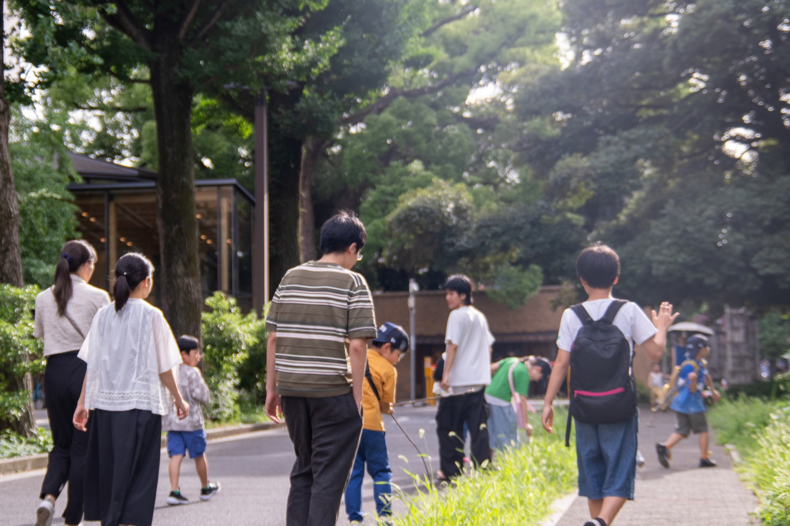

新学期のゆーすぽっとが始まりました
新しく来た子も、久しぶりの子も、それぞれのペースで過ごせる時間をつくっています。
OIKOSは、大学生が子どもたちと日常をともにしながら、ほっとできる居場所「ゆーすぽっと」を各地で育てています。静かな言葉と丁寧な写真で、その時間の尊さを伝えるトップページ案です。

派手ではなくても、確かに残る時間。OIKOSの活動を、紙のような静かな質感で見せる方向です。
Quiet refinement日々の活動報告も、単なる更新情報ではなく、場の空気が伝わる読み物として見せていく構成です。
新しく来た子も、久しぶりの子も、それぞれのペースで過ごせる時間をつくっています。
子どもの声を聴くこと、地域と連携すること、寄り添い方をあらためて学び直しました。
新年度の居場所運営を支えるため、月次寄付の募集を始めています。


子どもが何かを達成する場所ではなく、ただ安心して過ごせる場所。大学生が近い存在としてそばにいて、学校でも家庭でもない第三の居場所をつくること。それがOIKOSの活動の中心にあります。
この案では、強く叫ぶのではなく、静かな余白の中で信頼感を積み上げます。NPOとしての誠実さと、子どもたちとのやわらかな関係性を両立させる見せ方です。
「ここに来ると、少しだけ明日のことを考えられる。」
短期のイベントではなく、日常の中で出会いを重ねてきた人数です。
現場ごとに地域の文脈を大切にしながら、各大学で展開しています。
安心して戻ってこられる場所になっているかを示す指標として掲載します。
写真と同じくらい、短い言葉の余韻を大切にしたい方向です。
「学校でも家でもないけれど、ここにはいていいと思えた。」
「支援する側とされる側ではなく、同じ時間を一緒に過ごしている感覚がある。」